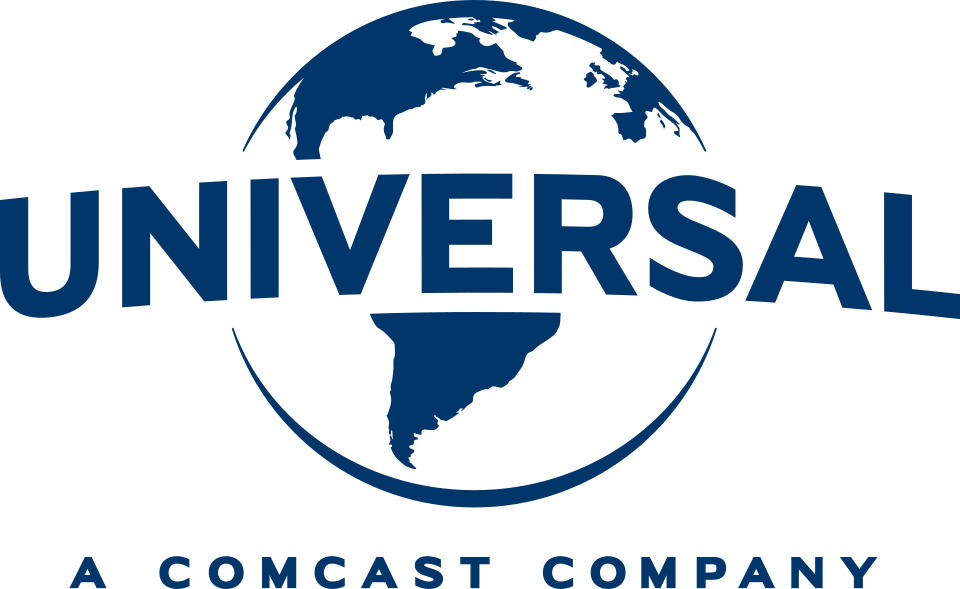
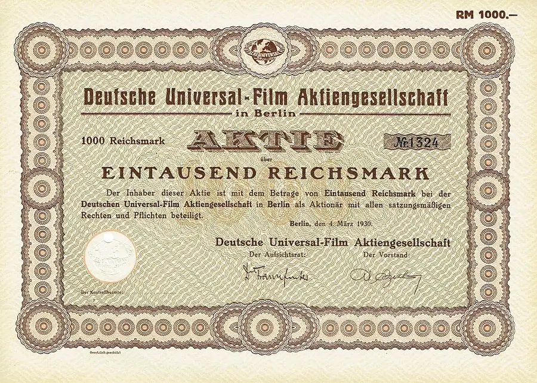
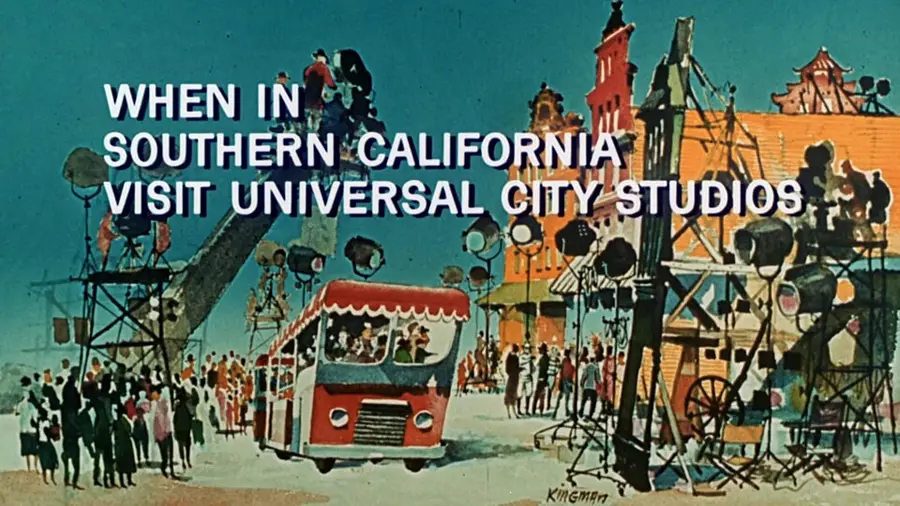
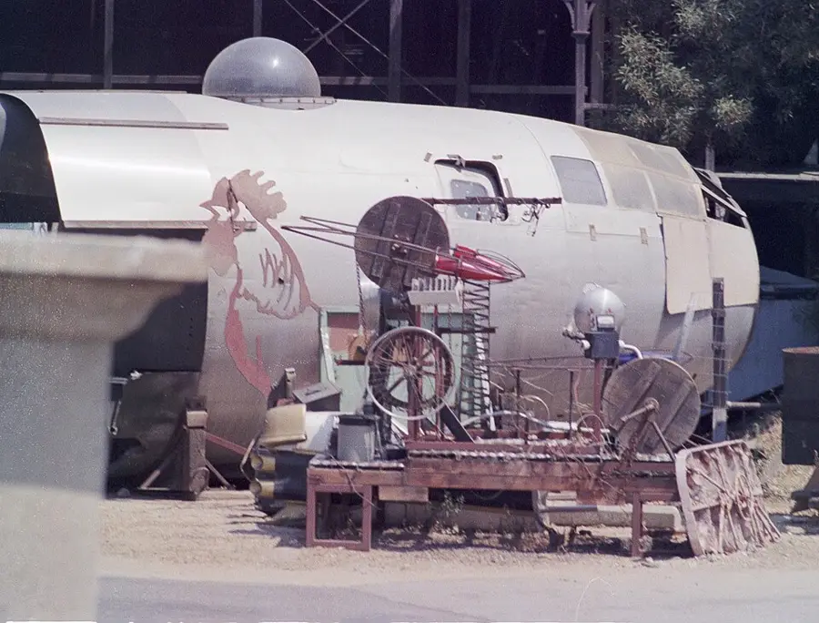

유니버설 픽처스 Universal Pictures
유니버설 픽처스(Universal Pictures)는 미국의 영화 제작사로, 컴캐스트의 자회사인 NBC 유니버설의 소유주이다. 이 회사는 세계에서 네 번째로 오래된 영화 스튜디오이자 할리우드 메이저 5대 스튜디오 중 하나이다.
최종 업데이트

유니버설 픽처스는 어떤 브랜드인가
유니버설 픽처스는 미국의 영화 산업을 이끄는 주요 기업 중 하나이다. 이 회사는 칼 라밀리를 포함한 여러 인물에 의해 설립되었으며, 세계에서 네 번째로 오래된 영화 스튜디오로 자리매김했다.
현재는 컴캐스트의 자회사인 NBC 유니버설 소속으로, 할리우드 메이저 5대 스튜디오 중 하나로서 영화 제작 및 배급에 중요한 역할을 한다. 다양한 형태의 영화와 NBC 방송국의 TV 제작물 방영권을 많이 보유하고 있다.
이 회사는 지속적인 인수합병과 파트너십을 통해 사업 영역을 확장해 왔다.
유니버설 픽처스는 어떻게 시작되고 성장했나
유니버설 픽처스는 1912년 칼 라밀리를 포함한 8명의 사람들에 의해 유니버설 영화제작회사(Universal Film Manufacturing Company)라는 이름으로 설립되었다. 라밀리는 에디슨의 영화 상영기 특허로 인한 독점 구조에 대항하여 독립적인 영화 제작을 결의했다.
그는 1909년 소규모 영화사를 공동 창업한 후, 배우를 전면에 내세워 홍보에 활용하는 초기의 배우 양성 체계를 확립했다. 1912년에 여러 소회사를 합병하여 유니버설 영화제작회사를 출범시켰으며, 이후 1925년에 현재의 이름으로 변경했다.
라밀리는 1915년에 세계에서 가장 큰 영화 제작 시설인 유니버설 시티 스튜디오를 열어 할리우드에서 가장 큰 영화 제작 회사로 성장시켰다.
유니버설 픽처스의 브랜드 아이덴티티는 무엇인가
유니버설 픽처스는 세계에서 네 번째로 오래된 영화 스튜디오이자 할리우드 메이저 5대 스튜디오 중 하나로서, 영화 산업의 초기부터 현재까지 중요한 영향력을 유지하고 있다.
유니버설 픽처스의 대표 제품과 서비스는 무엇인가
유니버설 픽처스는 단편 영화, 애니메이션 등 다양한 장르의 영화를 제작한다. 또한 NBC 방송국의 TV 제작물에 대한 방영권을 많이 보유하고 있으며, MGM 사가 소유하고 있는 영화 파일에 대해서도 일부 소유권을 행사한다.
회사는 다양한 영화를 소유하고 있으나, 모든 무성영화의 소유권은 현재 다른 독립영화사로 이전되었다. 일부 영화의 소유권은 워너브라더스, 리퍼블릭 영화사, 파라마운트 사, 스튜디오 카날 사 등 다른 회사에 있거나, TV 방영권이 다른 방송사에 있는 경우도 있다.
유니버설 픽처스는 지금 어떤 상태인가
1990년 이후 유니버설 픽처스는 파나소닉, 씨그램, 비방디를 거쳐 2004년 제너럴 일렉트릭에 인수되었다. 제너럴 일렉트릭은 NBC와의 합병을 통해 NBC 유니버설을 탄생시켰고, 유니버설은 이 그룹의 주요 영화 제작사로 자리매김했다.
2011년에는 컴캐스트가 NBC 유니버설의 지분 51%를 인수하며 최대주주가 되었고, 2016년에는 드림웍스 애니메이션을 인수하여 사업을 확장했다. 회사는 일루미네이션 엔터테인먼트를 설립하고 레전더리 픽처스, 실버 픽처스, 앰블린 파트너스 그룹 등과 배급 및 제작 계약을 체결하며 지속적으로 성장하고 있다.
유니버설 픽처스 로고는 어떻게 변해왔나
시기는 위키데이터 로고 기간 또는 위키미디어 커먼즈 파일 정보 기준입니다. 이미지를 누르면 원본 파일과 라이선스를 볼 수 있습니다.
사진으로 보는 유니버설 픽처스의 역사



자주 묻는 질문
유니버설 픽처스는 어느 나라 브랜드인가요?
유니버설 픽처스는 미국의 미디어·엔터테인먼트 브랜드입니다.
유니버설 픽처스는 언제 설립되었나요?
유니버설 픽처스는 1912년 설립되었습니다.
유니버설 픽처스의 브랜드 아이덴티티는 무엇인가요?
유니버설 픽처스는 세계에서 네 번째로 오래된 영화 스튜디오이자 할리우드 메이저 5대 스튜디오 중 하나로서, 영화 산업의 초기부터 현재까지 중요한 영향력을 유지하고 있다.
유니버설 픽처스의 대표 제품은 무엇인가요?
유니버설 픽처스는 단편 영화, 애니메이션 등 다양한 장르의 영화를 제작한다.
유니버설 픽처스는 어느 기업이 소유하고 있나요?
1990년 이후 유니버설 픽처스는 파나소닉, 씨그램, 비방디를 거쳐 2004년 제너럴 일렉트릭에 인수되었다.
유니버설 픽처스의 창업자는 누구인가요?
유니버설 픽처스의 창업자는 칼 렘리, Pat Powers, Jules Brulatour입니다(위키데이터 기준).
유니버설 픽처스의 본사는 어디에 있나요?
유니버설 픽처스의 본사는 유니버설시티에 있습니다(위키데이터 기준).
출처와 검증
유니버설 픽처스 관련 참고: 공식 웹사이트 · 위키데이터 Q168383 · 한국어 위키백과 · 영어 위키백과. 브랜드명은 한글과 원어를 함께 표기하되 데이터에 없는 표기는 만들지 않습니다. 기원 국가·설립연도는 검수된 정의문에서 확인된 값을 우선하고, 없을 때만 공식 웹사이트 URL이 일치하는 위키데이터 개체의 값을 씁니다. 탄생일의 월·일은 위키데이터, 위키백과 정보상자, 본문 가운데 같은 연월로 확인되는 값만 싣고, 출처끼리 다르면 싣지 않습니다. 웹 첫 보관은 인터넷 아카이브가 공식 사이트 첫 화면을 처음 보관한 날로, 사이트 개설일과 다를 수 있습니다. 위키데이터 값은 2026-09-07 기준입니다.